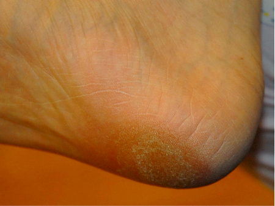

徐國樑
中國耳穴光針療法學院提供
十 步 痛 症 狀

足 跟 痛 大 概 可 分 為 「 十 步 痛 」 和 「步 步 痛 」 兩 大 類 。
「 十 步 痛 」 患 者 ， 在 早 上 落 床 時 或 久 坐 站 起 後 ， 會 感 到 足 跟 底 部 壓 觸 地 面 時 ， 出 現 針 刺 樣 劇 痛 ， 病 況 較 嚴 重 的 ， 刺 痛 會 擴 散 至 腳 前 掌 區 。
如 果 忍 痛 行 走 ， 約 十 餘 廿 步 後 ， 痛 竟 會 逐 漸 減 輕 ， 甚 至 消 失 。
不 過 ， 患 者 步 行 頗 長 距 離 後 ， 痛 又 會 重 新 出 現 。
本 會 網 頁 ， 由 一 九 九 六 年 九 月 一 日 起 計 ，
已 經 有 859585 人 次 觀 看 ， 多 謝 你 的 瀏 覽 。